PRESSURE WASHING & SOFT WASHING — JACKSONVILLE, FL
A Cleaner Home Starts Here.
Pressure washing in Jacksonville, FL — houses, driveways, roofs, patios and more.
Jacksonville Pressure Wash helps homeowners and businesses refresh their property with exterior cleaning designed for the surface, the material, and the buildup present. From house washing and driveway cleaning to roof soft washing, patios, fences, decks, and pavers, we provide practical exterior care for Jacksonville properties.
7-Day Satisfaction Check Reply within 24 hours
Quick Answer: Pressure Washing in Jacksonville, FL
Jacksonville Pressure Wash helps homeowners and businesses care for the surfaces that take the most abuse from weather, dirt, pollen, algae, and everyday use. Our services include house washing, concrete and driveway cleaning, patios and sidewalks, roof soft washing, fences, decks, and pavers, with the cleaning method chosen to match the material and condition of the surface.
- For: Homeowners and businesses planning exterior property maintenance.
- Common needs: Visible dirt, algae, mildew, stains, or organic buildup on outdoor surfaces.
- Next step: Request an estimate by email or call 877-367-5979.
Service information published by Jacksonville Pressure Wash, operated by Nazia Akbar. Page content updated .
OUR SERVICES
Pressure Washing Services in Jacksonville
Choose the right service for the surface you want refreshed: house siding, concrete, patios, roofs, fences, decks, or pavers. Each cleaning method is selected based on the material, the buildup present, and the condition of the area being treated.
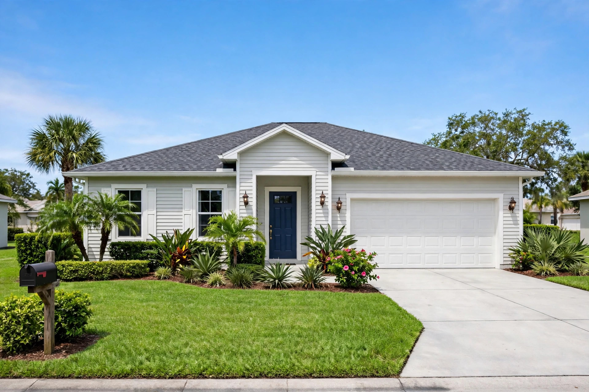
House Washing
House washing addresses dirt and organic buildup on suitable siding, stucco, and painted exteriors. The cleaning approach depends on the material and its condition.
House Washing Jacksonville, FL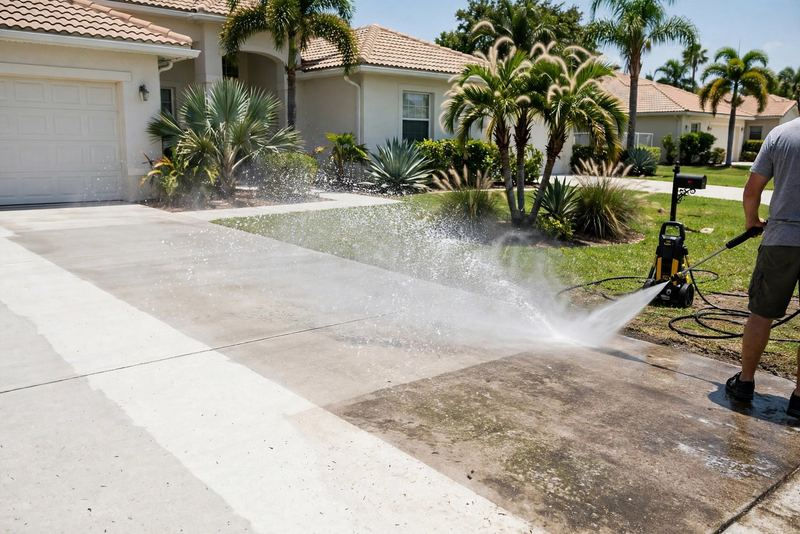
Driveway & Concrete Cleaning
Driveway and concrete cleaning focuses on hard outdoor surfaces where traffic and weather can leave grime, algae, tire marks, or staining. The surface is considered before cleaning.
Driveway & Concrete Cleaning Jacksonville, FL
Sidewalk & Patio Cleaning
Cleaning for sidewalks, patios, porches, and outdoor gathering areas addresses visible dirt and organic buildup while taking the surface material into account.
Sidewalk & Patio Cleaning Jacksonville, FL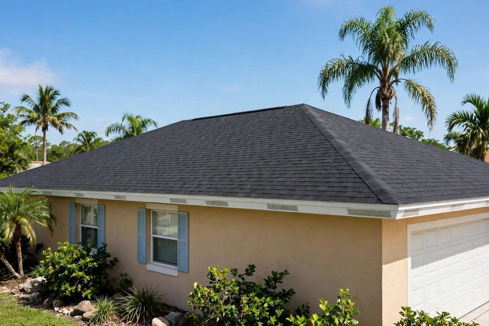
Roof & Soft Washing
Roof soft washing uses a lower-pressure approach rather than treating roofing like concrete. The appropriate method depends on the roof material, condition, and buildup.
Roof & Soft Washing Jacksonville, FL
Fence & Deck Cleaning
Fence and deck cleaning considers whether an exterior is wood, vinyl, or composite, along with its condition and any visible dirt or organic buildup.
Fence & Deck Cleaning Jacksonville, FL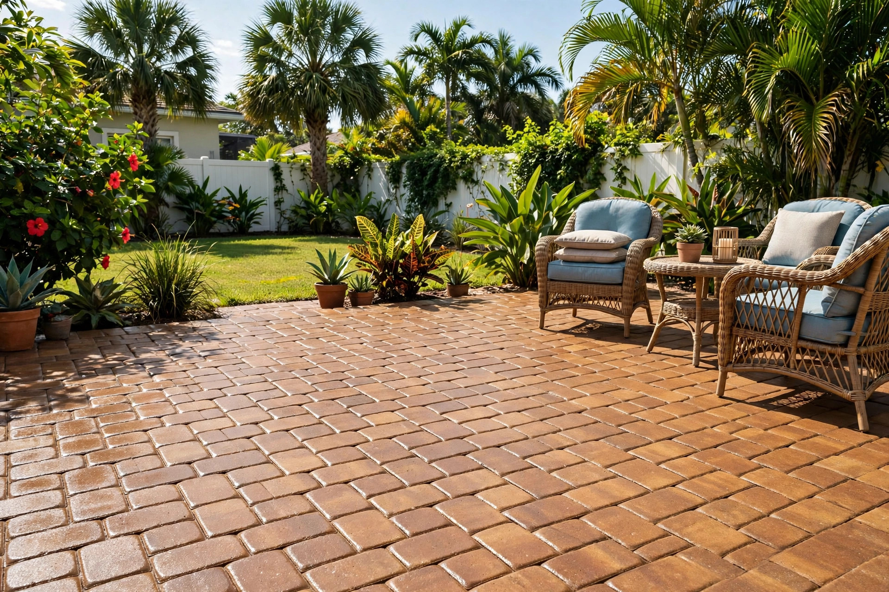
Paver Cleaning & Sealing
Paver cleaning addresses surface buildup and joint debris. If sealing is requested, the pavers and their condition should be reviewed as part of planning the work.
Paver Cleaning & Sealing Jacksonville, FL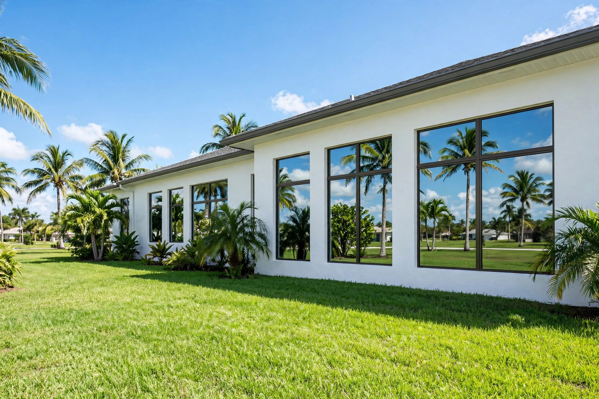
Window Cleaning
Window cleaning addresses dirt and buildup on exterior glass. The method depends on the window type, height, and condition.
Window Cleaning Jacksonville, FL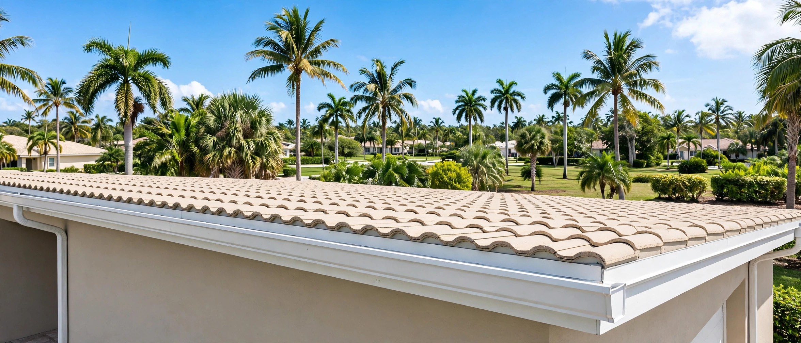
Gutter Cleaning
Gutter cleaning removes leaves and debris from gutters and downspouts so rainwater can flow away from the roof and walls.
Gutter Cleaning Jacksonville, FL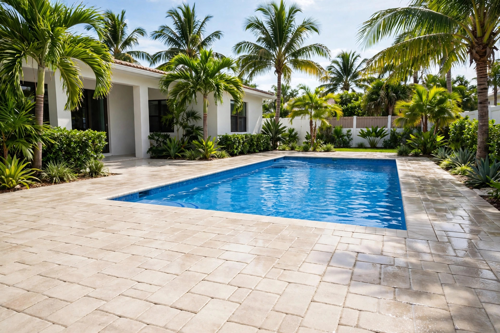
Pool Deck Cleaning
Pool deck cleaning addresses dirt and organic buildup on pavers and concrete around the pool, taking the surface material into account.
Pool Deck Cleaning Jacksonville, FL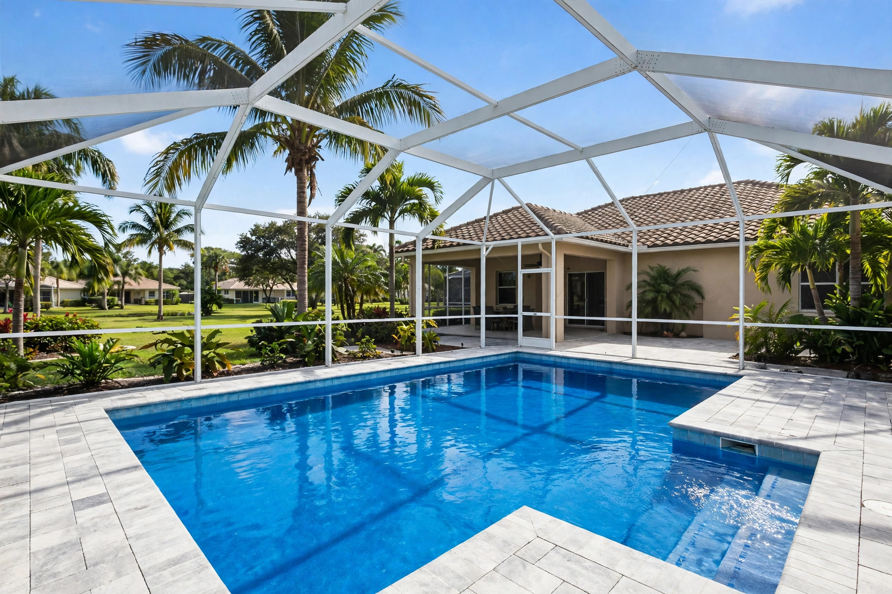
Screen Enclosure & Pool Cage Cleaning
Screen enclosure and pool cage cleaning addresses dirt and buildup on frames and screens, using a method suited to the material.
Screen Enclosure & Pool Cage Cleaning Jacksonville, FL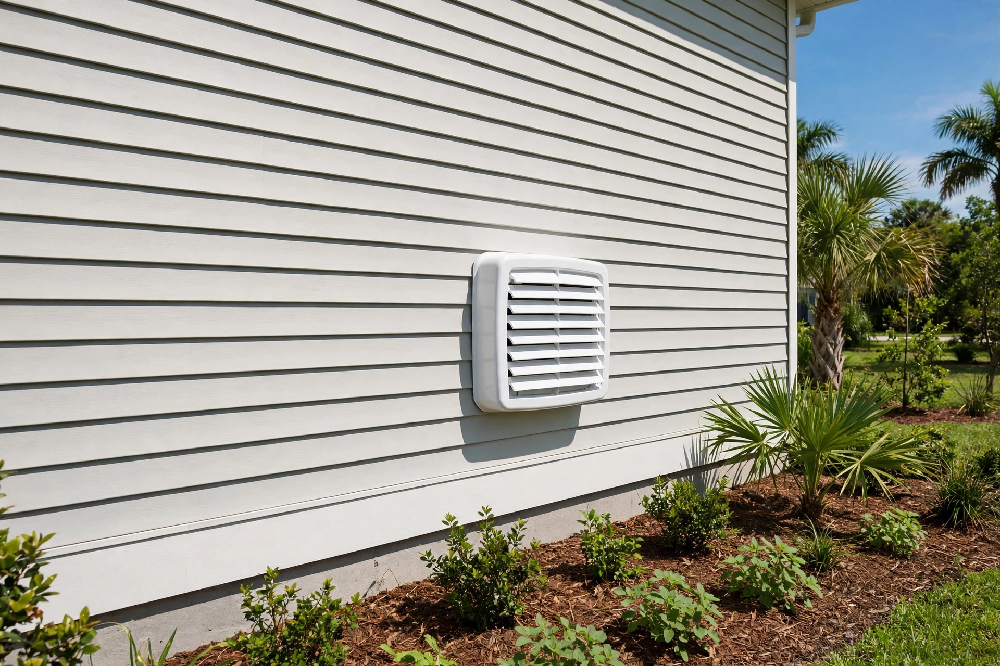
Dryer Vent Cleaning
Dryer vent cleaning covers the exterior vent only — the outside cover and vent opening — to help airflow at the exit point.
Dryer Vent Cleaning Jacksonville, FL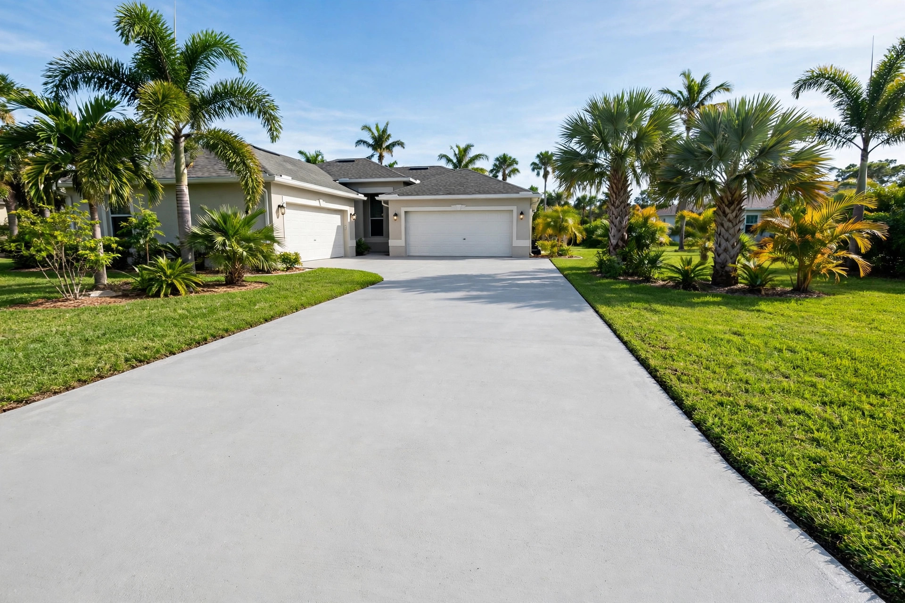
Rust & Stain Removal
Rust and stain treatment targets surface stains on concrete and pavers. Deep or old stains may only fade rather than disappear completely.
Rust & Stain Removal Jacksonville, FL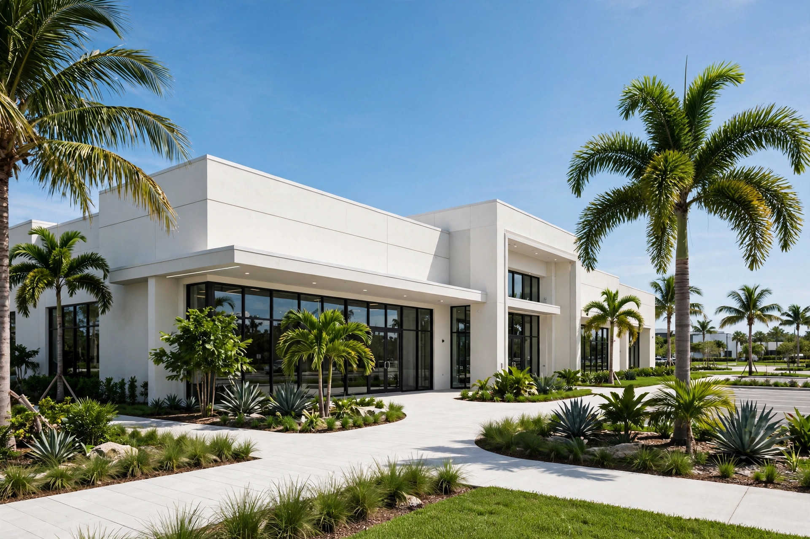
Commercial Exterior Cleaning
Commercial exterior cleaning covers storefronts, walkways, and building exteriors for Jacksonville businesses, planned around the property and its surfaces.
Commercial Exterior Cleaning Jacksonville, FLBEFORE & AFTER
See the Difference
Slide the handle to see what a clean can do. Before is on the left, after is on the right.
Sample photos showing the difference cleaning can make. We will add photos from our own Jacksonville jobs as they are completed. Want your property to look like the after photo? Get a free quote.
OUR PROMISE
7-Day Satisfaction Check
If a spot remains within 7 days, tell us and we will come back and re-clean that spot free.
7-Day Satisfaction Check
If a spot is missed or remains within 7 days of cleaning, tell us and we will re-clean that spot free.
Working Hours
Monday to Friday, 9:00 AM to 4:00 PM Eastern Time.
24-Hour Reply
We reply to estimate requests within 24 hours. Call 877-367-5979 or email info@flpressurewashingjacksonville.com.
WHAT CAN WE REMOVE?
What Can We Remove?
Outdoor surfaces can collect more than dirt. In Jacksonville, buildup from weather and everyday use often shows up as grime, algae, mold, mildew, discoloration, oil stains, tire marks, and general surface staining.
- Dirt
- Grime
- Algae
- Mold
- Mildew
- Organic buildup
- Oil stains
- Tire marks
- Weather staining
- Surface discoloration
For general mold cleanup guidance, including when extensive or water-damaged areas may need specialist help, see the U.S. Environmental Protection Agency's mold cleanup recommendations. That guidance is not a pressure-washing specification.
PRESSURE WASHING OR SOFT WASHING?
Pressure Washing or Soft Washing?
Pressure Washing
Pressure washing uses higher water pressure and is commonly appropriate for durable surfaces such as concrete, driveways, sidewalks, and certain hard exterior areas.
Soft Washing
Soft washing uses lower pressure and cleaning solutions, which can be more appropriate for surfaces where high pressure may cause damage. This method is often used for roofs and other delicate exteriors.
The right method depends on the surface material, its condition, and the type of buildup. Not sure which service your property needs? Ask for an estimate.
WHY CHOOSE US
Why Choose Professional Exterior Cleaning?
Jacksonville Pressure Wash is operated by Nazia Akbar in Jacksonville, Florida. We have 1 year of experience in exterior cleaning, and we serve homes and businesses in Jacksonville and nearby communities.
Careful Surface Cleaning
We look at the surface first and use the right approach so the cleaning is effective without causing unnecessary wear.
Clear Communication
We keep the process straightforward so you know what to expect and what will be cleaned.
Thorough Work
We pay attention to the surfaces that are easy to miss, so the final result looks cleaner and more complete.
Fair Pricing
We provide straightforward pricing and realistic expectations so there are no surprises.
Responsive Scheduling
We understand that exterior cleaning is often time-sensitive, and we work to keep the process simple and timely.
Appropriate Cleaning Methods
Not every exterior surface needs the same treatment. We choose the cleaning approach based on the material and the buildup present.
OUR SIMPLE PROCESS
Our Simple Cleaning Process
-
Get a Free Quote
Tell us about the property and the cleaning needs. We will look at the project and provide a clear estimate.
-
We Schedule
We agree on a day and time that works for you, and confirm access, water supply, and any preparation needed.
-
We Clean
We clean the surfaces using the method that best fits the material and the level of buildup.
-
7-Day Check
After the work, we look over the finished area. If a spot remains within 7 days, tell us and we will re-clean that spot free.
JACKSONVILLE AND NEARBY COMMUNITIES
Exterior Cleaning Service Areas
Jacksonville is our primary service area, with nearby communities also included on our service-area page. Use the list below to see if your property is covered, then reach out to discuss the surfaces you want cleaned and the level of buildup present.
Get a Free EstimateExterior cleaning for outdoor surfaces, including:
- House siding and other suitable exteriors
- Driveways, concrete, sidewalks, and patios
- Roofs, fences, decks, and pavers
FAQS